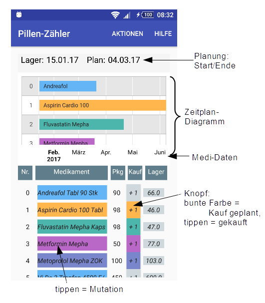
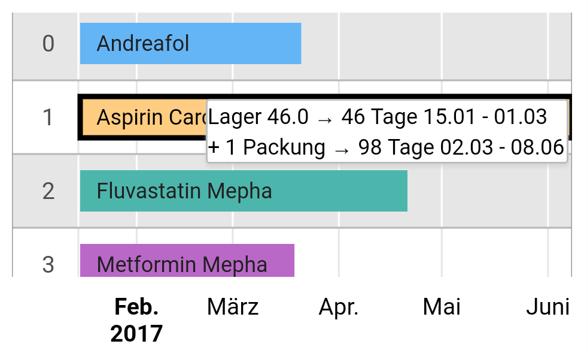
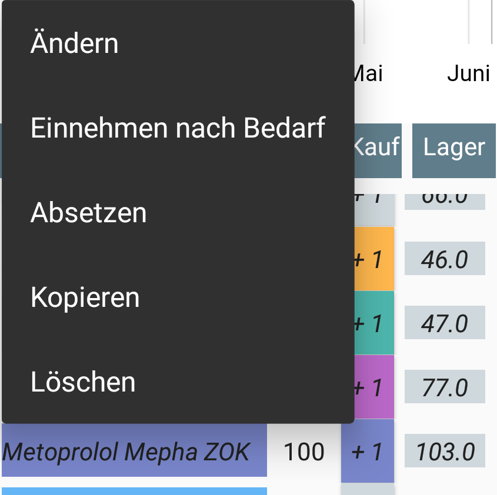

Welche und wie viel von meinen Medikamenten müssen beschafft werden?
Abhängig von folgenden Argumenten wird das berechnet:
- Vorrat im Lager
- Dosen gemäss Arztrezept
- Planungs-Zeitraum (beliebig wählbar)
- Packungsgrössen
Die App bietet dem Benutzer eine grosse
Flexibilität bezüglich Datenänderungen, sorgt aber auch für eine hohe Datenintegrität.
Die App setzt Google-Zeitplan-Diagramme ein. Das setzt eine
Internetverbindung voraus.
Diagrammdaten
werden über das Netz gesendet, jedoch nicht in der Cloud gespeichert.
Grund-Bildschirm

Plaungszeitraum
Die App plant für den Zeitraum zwischen dem Datum 'Lager' und 'Plan'.
Farben der Balken
- Gelb: Medikament abgesetzt, Einnahme nach
Bedarf oder Einnahme nicht täglich. Die App bewirtschaftet das Medikament nicht.
- Hellblau: Lager gross genug für Planzeitraum.
- Sonst (weder gelb noch hellblau): Medikament muss gekauft werden. Von diesen erhält jedes eine besondere Farbe - die gleiche im Zeitplan-Diagramm
wie in der Medikamentenliste, damit man sofort sieht, was zusammen gehört.
Kolonne 'Kauf' der Medidaten
Das sind Knöpfe: tippen, um einen Kauf zu erfassen.
Kolonne 'Lager' der Medidaten
Das sind Eingabefelder: tippen, um den Lagerbestand zu erfassen.
Planungs-Diagramm
Das ist ein Zeitplan-Diagramm. Es zeigt, wie weit die Lagervorräte inkl. notwendigen
Beschaffungen reichen. Das Antippen eines Balkens zeigt Planungsdetails.

Mutationen
Die folgenden Operationen unterhalten die Medikamentendaten.

- Ändern: Medi-Name und -Zusatz müssen komplett und exakt erfasst werden,
1:1 mit dem Rezept, um sie für die Apotheke eindeutig zu machen. Die Packungsgrösse muss
grösser 0 sein.
- Einnehmen nach Bedarf und Medikament absetzen:
die App macht keine Berechnungen mehr.
Reaktivierung: Medikament kopieren und auf den neuen Stand bringen, damit keine veraltete
Angaben übernommen werden.
- Kopieren: nur der Name und der Zusatz werden übernommen.
Listen, Auswertungen
- Einkaufsliste: Medikamente, die in der
Apotheke gekauft werden müssen.
- Kostenliste: tägliche und jährliche Kosten pro Medikament
sowie aller Medikamente zusammen - für die Wahl der Krankenkassen-Franchise.
- Das Kontrollblatt zeigt den aktuellen Lagerbestand und den
voraussichtlichen Bestand am Ende des Planungszeitraumes. Damit kann die
Einnahme der Medikamente kontrolliert werden.